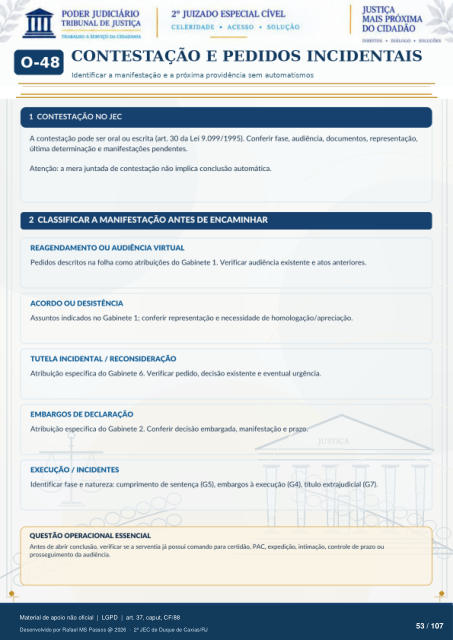

MÓDULO COMPLEMENTAR
CONTESTAÇÃO E PEDIDOS INCIDENTAIS
Identificar a manifestação e a próxima providência sem automatismos
1 CONTESTAÇÃO NO JEC
A contestação pode ser oral ou escrita (art. 30 da Lei 9.099/1995). Conferir fase, audiência, documentos, representação, última determinação e manifestações pendentes.
Atenção: a mera juntada de contestação não implica conclusão automática.
2 CLASSIFICAR A MANIFESTAÇÃO ANTES DE ENCAMINHAR
REAGENDAMENTO OU AUDIÊNCIA VIRTUAL
Pedidos descritos na folha como atribuições do Gabinete 1. Verificar audiência existente e atos anteriores.
ACORDO OU DESISTÊNCIA
Assuntos indicados no Gabinete 1; conferir representação e necessidade de homologação/apreciação.
TUTELA INCIDENTAL / RECONSIDERAÇÃO
Atribuição específica do Gabinete 6. Verificar pedido, decisão existente e eventual urgência.
EMBARGOS DE DECLARAÇÃO
Atribuição específica do Gabinete 2. Conferir decisão embargada, manifestação e prazo.
EXECUÇÃO / INCIDENTES
Identificar fase e natureza: cumprimento de sentença (G5), embargos à execução (G4), título extrajudicial (G7).
QUESTÃO OPERACIONAL ESSENCIAL
Antes de abrir conclusão, verificar se a serventia já possui comando para certidão, PAC, expedição, intimação, controle de prazo ou prosseguimento da audiência.
Ver também o infográfico original (página 53)
